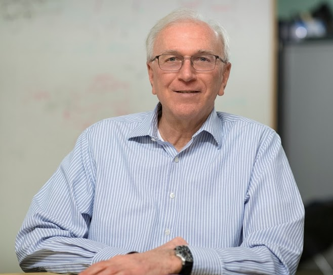

Keynote Speakers
Date: May 10, 2023
Convergence Between Model - and Data – driven Design for Cyber-Physical Systems
Speaker: Janos Sztipanovits, Vanderbilt University, USA
Bio: Dr. Janos Sztipanovits is currently the E. Bronson Ingram Distinguished Professor of Engineering at Vanderbilt University and John Von Neumann professor of the Budapest University of Technology and Economy. He served as founding director of the Institute for Software Integrated Systems between 1998 and 2022, and currently he is member of the Executive Council. Between 1999 and 2002, he worked as program manager and deputy director of DARPA Information Technology Office. He was member of the US Air Force Science Advisory Board between 2006 and 2010 and the Board on Army RDT&E, Systems Acquisition, and Logistics (BARSL) between 2019 and 2021. He co-authored two books and over 350 papers in model-based design, model-integrated computing, design automation for cyber-physical systems, security and autonomous systems. He is Fellow of the IEEE and external member of the Hungarian Academy of Sciences.
Abstract: Cyber-Physical Systems (CPS) give rise to a heterogeneous but tightly coupled engineering design domain. CPS design requires engineering processes that span multiple design disciplines, complex design flows and extensive tool suites. One of the challenges of model-based design automation of CPS is that design trade-offs across traditionally isolated design domains require the deep integration of models, design flows and tool chains. The first part of the talk covers the evaluation of model-based methods gained along the implementation of an experimental design automation tool suite, OpenMETA developed for DARPA’s Adaptive vehicle Make (AVM) program. Experience with OpenMETA showed fundamental benefits as well as practical limitations of model-based design. Cost of developing component models and reusable component model libraries, the semantic complexity of compositional design of systems using heterogeneous components and scalability concerns of design space exploration represent challenges that slow down progress. Recent advances in data-driven methods that has been inspired by the successes of machine learning and AI applications offer partial answer to these challenges while introducing others. The second part of the talk presents recent results in introducing Learning-Enabled Components (LECs) in CPS design and new methods in design space exploration using surrogate models. Progress in the assurance of CPS designs incorporating LECs and developing surrogate models that merge symbolic and data-driven elements show that the convergence of model- and data-driven design is a promising direction that has the potential of accelerating industrial impact. The talk will conclude with the impact of this convergence on tool suites supporting the design of mission and safety critical systems CPS.
Date: May 11, 2023
Towards Ambient Intelligence for Healthcare: A CPS Perspective
Speaker: John A. Stankovic, University of Virginia, USA
 Bio: Professor John A. Stankovic is the BP America Professor in the Computer Science Department at the University of Virginia and Director of the (CPS) Link Lab. He is a Fellow of both the IEEE and the ACM. He has been awarded an Honorary Doctorate from the University of York for his work on real-time systems. In 2022, he was elected to the Virginia Academy of Science, Engineering, and Medicine. He won the IEEE Real-Time Systems Technical Committee's Award for Outstanding Technical Contributions and Leadership. He also received the IEEE Technical Committee on Distributed Processing's Distinguished Achievement Award (inaugural winner), and the IEEE TC on CPS’s Technical Achievement Award. He has two test-of-time paper awards. Stankovic has an h-index of 122 and over 65,000 citations. Prof. Stankovic received his PhD from Brown University.
Abstract: Ambient Intelligence has been a goal for more than 20 years. Are we getting close? What if we focus ambient intelligence on smart healthcare, are we getting close? What role does CPS play in ambient intelligence? This talk is motivated by these questions. Various challenges, research directions, and research results from my group’s work will be used to (partially) address these themes for smart healthcare. The talk includes discussions of the vision, the role of CPS, cognitive assistants on wearables, solutions supporting mental health, and lessons learned from real deployments. There is also a brief discussion on two key challenges: the need for robust models and dealing with uncertainties due to the environment and human behaviors.
Date: May 12, 2023
Efficiently Enabling Rich and Trustworthy Inferences at the Extreme Edge
Speaker: Mani Srivastava, University of California, Los Angeles, USA
 Bio: Mani Srivastava is on the faculty at UCLA where he is a Distinguished Professor in the ECE Department with a joint appointment in the CS Department and is the Vice Chair for Computer Engineering. His research is broadly in the area of human-cyber-physical and IoT systems that are learning-enabled, resource-constrained, and trustworthy. It spans problems across the entire spectrum of applications, architectures, algorithms, and technologies in the context of systems and applications for mHealth, sustainable buildings, and smart built environments. He is a Fellow of both the ACM and the IEEE.
Bio: Mani Srivastava is on the faculty at UCLA where he is a Distinguished Professor in the ECE Department with a joint appointment in the CS Department and is the Vice Chair for Computer Engineering. His research is broadly in the area of human-cyber-physical and IoT systems that are learning-enabled, resource-constrained, and trustworthy. It spans problems across the entire spectrum of applications, architectures, algorithms, and technologies in the context of systems and applications for mHealth, sustainable buildings, and smart built environments. He is a Fellow of both the ACM and the IEEE.
Abstract: Computing systems intelligently performing perception-cognition-action (PCA) loops are essential to interfacing our digitized society with the analog world it is embedded in. They employ distributed edge-cloud computing hierarchies and deep learning methods to make sophisticated inferences and decisions from high-dimensional unstructured sensory data in our personal, social, and physical spaces. While the adoption of deep learning has resulted in considerable advances in accuracy and richness, they have also resulted in challenges such as generalizing to novel situations, assuring robustness in the face of uncertainty, engendering trust in opaque modes, reasoning about complex spatiotemporal events, and implementing in ultra resource-constrained edge devices. This talk presents ideas for addressing these challenges with physics-aware neuro-symbolic models, automatic platform-aware architecture search, and sharing of edge resources, and describes our experience in applying them in varied application domains such as mobile health, agricultural robotics, etc.